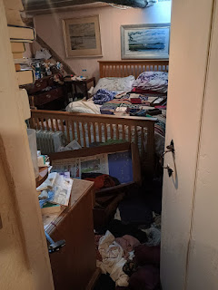
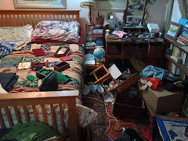
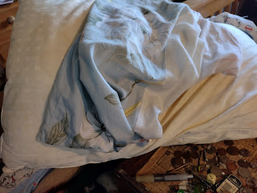
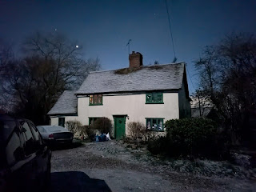

It was late in the evening and we were still sitting round the kitchen table in Yorkshire, finishing our red wine, knowing we should have gone to bed but relishing the time with our youngest son Archie and his wife Steph. We’d come up from Essex to this small West Riding town watch Archie’s pupils perform Mary Poppins. Steph had met us earlier with our granddaughter Ada, now sweetly asleep upstairs. It had been a lovely day away.
Then my phone rang. It was Bertie, our son who lives as our
‘next door neighbour’ at home. This means a small separate building in the
same space - 'the shed'. He and his dogs had unexpectedly left home that day, to visit a friend in distress. An unplanned absence.. He’d just returned, seen upstairs lights left
on, discovered the back door open and our bedroom in chaos. Understandably he
was shocked and upset.
 |
| No, not normal mess |
{kind=link}
Our house is isolated. That's its charm, normally, but now it was the middle of the night. I had no idea how long
he’d have to stay up waiting for the police. He’d sent us a photo taken from the
doorway of our bedroom. I didn’t like the feeling that whoever had caused all
this mess could still be nearby, in the fields at the back, maybe.
I lay awake in my cosy Yorkshire bed feeling very far away and wishing morning would come. I sent a message to my daughter,
Georgeanna, who lives nearby, telling her what had happened, but there was no
reply. For once she and her baby must be getting some sleep. I still worried about Bertie, waiting there
alone in the violated house, not allowed to touch, not allowed go to bed in his own space and shut himself in. I hesitated. I cracked. I rang to wake my son-in-law, Mark, who immediately
offered to go and drink cups of tea with Bertie and wait with him till the
police arrived.
I thought, for the umpteenth time, how lucky I am to have
all these dear ones nearby, coming easily in and out of our home. It had however been the indirect cause of the
intrusion. Normally the space in front of the house is full of everyone’s cars
and Georgeanna’s horse trailer. People arrive and leave frequently. But that day
she’d moved the trailer; the horses were holidaying in a distant field; we’d
gone to Yorkshire; Bertie and his clamorous dogs had gone elsewhere. The
thieves had been quick to take advantage.
 |
| There wasn't much in these boxes |
{kind=link}
What I love about living here is its privacy, its secrecy
even. If I can’t be bothered to get dressed in the morning, I feed the
horses in my dressing gown and wellies. We’re
quite hard to find – no signpost at the top of the lane, a postcode that
misdirects. When we used to have primary school activities here, I was
regularly accused of moving the house between visits. There’s an off-grid feeling to living here.
The burglary was a rude reality check.
‘We’re just sitting ducks,’ said Allison the parish clerk bitterly, when her secluded cottage was burgled similarly the following week, while she and her various children were all-too-obviously, out. We’d worked out by then what had happened to us. The burglary hadn’t taken place at night, as we first assumed. It was mid-afternoon. They’d parked at the end of the drive, presumably walked up to knock on the door – as if delivering something or asking directions, then gone round the back and pushed the back door open. They were focussed and working to a routine – take no notice of computers and TVs, furniture or pictures, too bulky, too easily traceable and little value – go straight up to the bedrooms and begin emptying drawers. Pull a pillowcase off the bed to fill up with swag. Only take jewellery and cash, easy to carry, easy to get rid of. On the way out, raid the cupboard under the kitchen sink for some cleaning product to remove fingerprints and DNA.
 |
| no time to fill the pillowcase |
{kind=link}
Because they did run. One of our neighbours was driving down
the lane on her way to collect her child from school. Just a little earlier
that afternoon her dog had been making a tremendous noise – as if someone was
possibly outside the house. So, when she saw two men in black sprinting down
our drive to jump in their car, and drive away at speed, she was sufficiently alert to pull out her phone and film them. That was how we knew when
the burglary had occurred. Not late at night when Bertie had come home.
We don’t know what made them run. Bertie has a theory that gunshots in the back field where a pigeon shooter is occasionally active could
have scared them. Perhaps they’d been watching too many urban shoot-out films.
It clearly wasn’t a sudden pang of conscience or realisation
of the error of their ways. On the afternoon of the following week, the same day that Allison’s cottage was ransacked, two other houses in the neighbourhood suffered similar incursions. Except that in one of them, the householder was not
only at home but had a working CCTV system which recorded the vehicle used and
the face of the front man. There were
two others, but they were hooded. One person has been arrested and is now on bail.
Currently we’re all in a state of limbo waiting for various
results to come back from the police DNA lab in Coventry. What connections can
be made? What charges can be brought, and will they stick? Meanwhile the
purveyors of video doorbells, reinforced back doors and surveillance cameras
are doing good business in our area. The police go from door to door, asking everyone ‘What did you see?’ My wellie-boot and dressing gown days are over.
 |
| I love this house |
{kind=link}